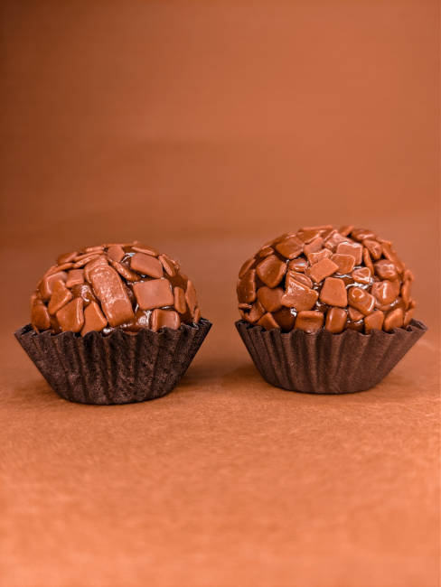

O brigadeiro é uma sobremesa muito popular no Brasil, tanto por ser prático e saboroso!
😧 Como posso fazer o brigadeiro?
impossivel
muito simples 😍 vamos nessa 👍
Ingredientes
- Leite condensado
- 2 Litros e meio
- Creme de Leite
- 1 Litro
- Margarina
- 150 gramas
- Leite integral
- 200 ml
- Chocolate em pó
- 300 gramas
Préparo
Você pode conferir no canal do YouTube!
Ou acessar o guia completo na nossa pagina de préparo